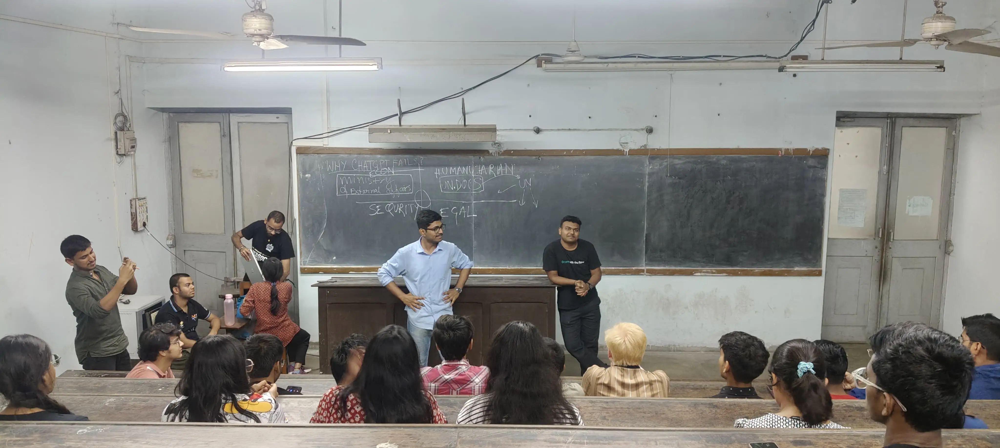
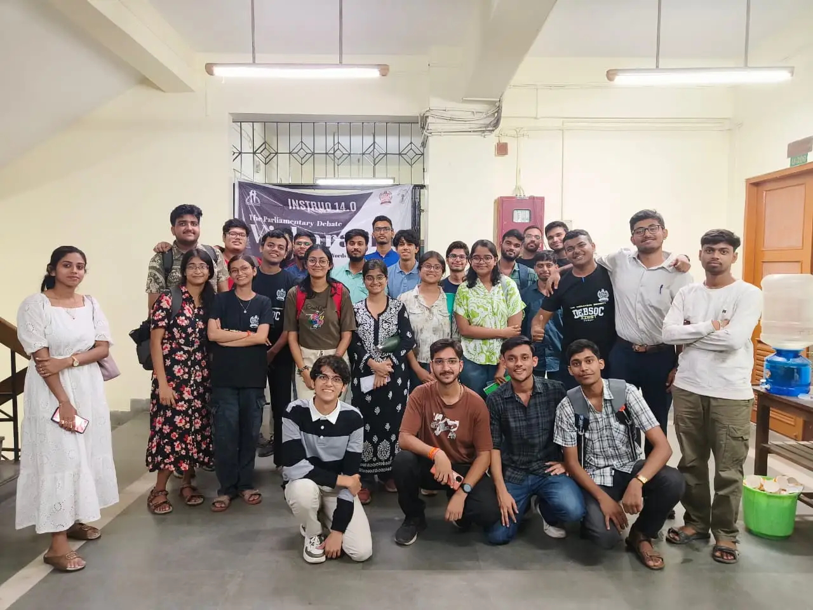

Debating Society, IIEST Shibpur
The signature fortnightly magazine of DebSoc. A bridge between the campus and global discourse. Flip through the latest issue below, then browse every published edition.


Delegate’s notes
DebSoc’s fortnightly magazine, tagline “Where opinions stand trial.” It is a bridge between the campus and wider debate.
Fortnightly. The issues so far are December 2025 Part 1, December 2025 Part 2 and January 2026 Part 1.
Further up this page, under Published Tribunals. Each issue opens as a PDF.